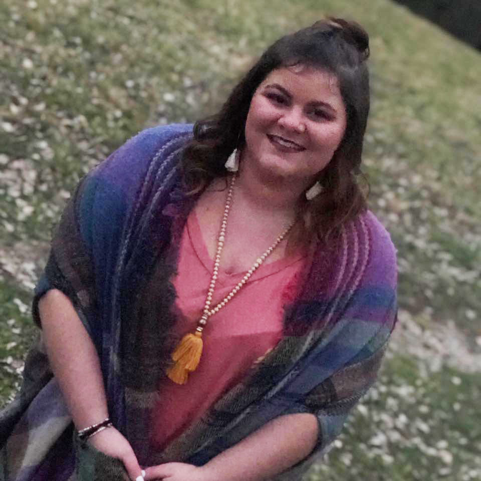

About Me

My name is Ashley Owens and I am a 6th grade ELA teacher at
Spencer County Middle School! I've been teaching for four years and
love getting to use my passion for reading and writing to teach students how to better themselves in those areas. All four years of my teaching career so far have been at SCMS working with 6th grade. It's my hope that one day I can transition into a school librarian role some day in the future.
Another interest of mine is gardening, and really just being outdoors in general. Even if I'm just outside reading a book in the sunshine. I've grown up with a family that is
extremely outdoor crazed, so that's something I've just continued to enjoy into adulthood. Sports is another aspect of my youth that I still enjoy now, except now it's more of a watching-only kind of thing versus actually playing. I also enjoy recreational writing in my spare time and have a book published called
Her Leaves Remain .
My Experience
I graduated with a bachelors degree in journalism through Eastern Kentucky University. About two years after graduating there, I began my MAT journey in education at the University of the Cumberlands, which led me to getting my teaching position at SCMS. I've been at SCMS since and am now working toward my Rank 1 in EKU's library science program. I love that I am getting to once again call myself a Colonel like I was able to do in my time as an undergrad.
Fun Facts with Ms. Owens
1. Pink is my favorite color (in case this site didn't tell you enough).
2. I'm a die-hard Green Bay Packers fan and WILL debate about their greatness with you if asked to.
3. I collect snowglobes, with around seven total so far and plenty of room to collect more.
4. I've written and published a book called
Her Leaves Remain and it can be found on Amazon.
5. My students are my daily motivation. :)
Contact Info
For more information, please feel free to contact me at the following email address or follow the link to the SCMS page:
ashley.owens@spencer.kyschools.us
SCMS Homepage